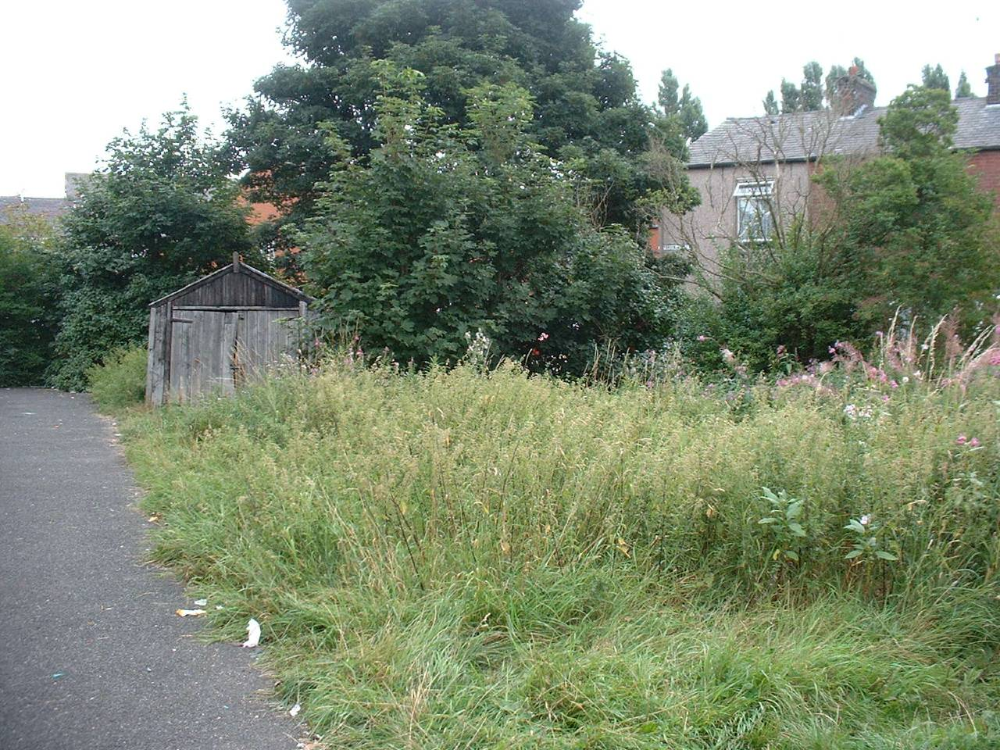
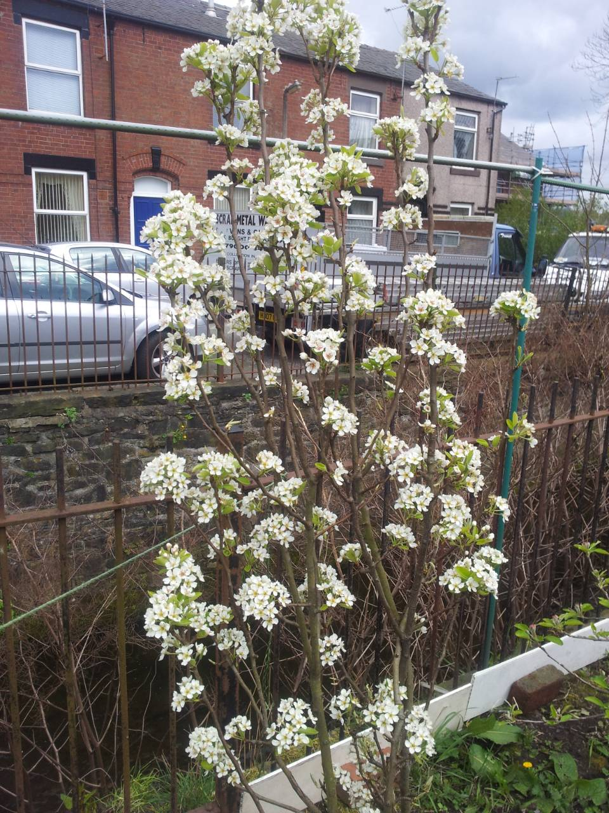
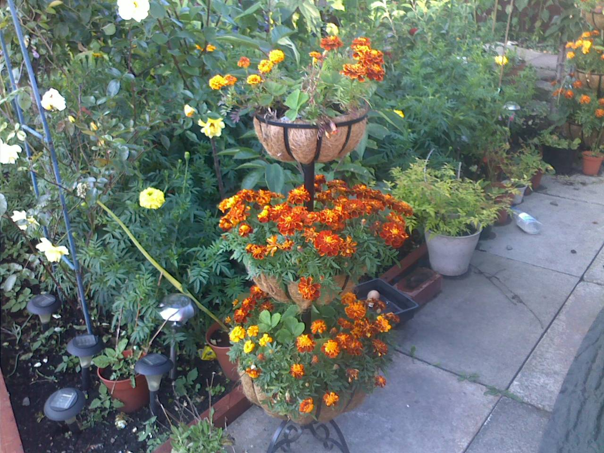

ACA Garden
Where strangers become friends
1 / 6

New year, new faces!
2 / 6
Greenhouse full to the brim!
3 / 6

The pond area in summer
4 / 6

Who doesn't love grapes?
5 / 6

And strawberries?
6 / 6

They have to start from something...
ABOUT US
Welcome to Ajnabi Garden where strangers become friends. We are a group of local people working together for a common goal to work as a community: to grow colourful flowers, fruit and vegetables. The community garden started in 2006 with just two members and with initial assistance from Rochdale council's environmental team it enabled us to clean the dumping area.
We are a group of local residents who work together to learn and grow plants for use within the community and the community garden. We started with just two volunteers who were interested in growing and helping the environment but had no experience.
Our aim is to encourage people to learn new skills within the garden whether it is the community garden or their own garden. We encourage people within the garden to take care of the environment, promote healthy life style and to encourage people from diverse backgrounds to communicate and work together.
OUR VOLUNTEERS
Here are some pictures captured of some of the volunteers.
Click on the images to make them full screen


OUR STORY
Before the project started, the land was used as a local dumping ground. We found all kinds of rubbish, everything and the kitchen sink. Things we found are:
- Fridge freezers
- Matresses
- Bed frames
- Car tyres
- Huge amounts of building rubble
- Overgrown shrubs
- A kitchen sink
To start with we had to pick the small amounts of asbestos out by hand. Over time we discovered more and more asbestos however we secured some funding to clear this up.
Over time we came across someone who had experience with landscaping and gardening, who offered to help develop the community garden and advised us on how to grow and look after plants. Who also got interested with the project and offered to donate his time to help develop the community garden further. Since then, we have been able to develop our ideas into reality and actual designs. We have been able to build:
- Pyramid raised beds
- Pergola
- Footpaths
- Seating area
- Planters
- Wooden fencing
- Tool storage and work area
THE BIG CLEAN UP
Here is some of what we found while cleaning up.
Click on the images to make them full screen


WHAT WE DO IN THE COMMUNITY GARDEN
We propagate seeds which have been collected the previous year and also seed from packets which we have bought either to try new flower Varity and the ones which cannot be collected (i.e. spinach, corn, lettuce, cucumber, and courgette). We carry out all stages of propagation from sowing seeds in the electric propagator (to encourage the germination process) to potting the small seedlings to grow them on until they are ready to be planted outside.
During the year, we take cutting from some of the plants that we cannot grow from seeds, dip them in rooting compound and plant them into compost until roots stat to form. These are then potted on until they are suitable to be planted outside and spare plant are given away to members and local residences.
We have a small fish pond with few goldfish which are developing and using it to show pond and fish care.
We grow plants such as:
- Marigolds of different varieties
- Tulips
- Dahlias
- Grapevines
- Roses of various colours
- Fruit trees; Plumbs, Apple, Pear
- Hydrangeas
- Raspberries
- Strawberries
- Daffodils
- Snow Drops
- Lilies
- A variety of Zinnias
- Begonias
- Mint of different variety
- Onions and Garlic
- Runner Beans
- Potatoes
OUR PLANTS
Here is just some of the plants in our community garden.
Click on the images to make them full screen






FUNDING
As the time progressed, the community garden started to develop realised that we needed funding to help support the projects within the community garden. We initially approached the local council who were more than happy to help local community groups with advice and funding to clean up the local environment.
We used this funding to remove the large amount of asbestos by employing professional environmental company who safely disposed the asbestos, buy fencing, cut down overgrown shrubs and large trees. This also gave us the opportunity to get someone in to remove the tree roots and level the ground. Which gave us the encouragement to apply for more funding in the future which also allowed us within time to develop other projects such as:
- Build a pergola
- Lay paving footpaths
- Build raised bed with waterfall and pond
- Build a storage/work area
- Rain water storage
- Purchasing greenhouses
- Renewing damanged fencing overtime
- Purchasing an array of gardening tools
- Solar panels for renweable energy for the garden
We would like to thank Rochdale Council for their continuous support and funding that has allowed us to continuously achieve some of our projects.
We would also like to thank eON Energy for their funding support that has allowed us to be self-sufficient with the power by purchasing solar panel and lighting equipment for the community garden.